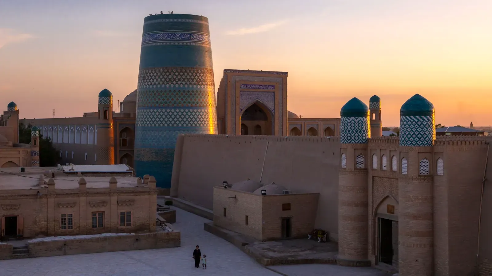

Meilleur prix1 jour
01
Meilleur prix1 jour
01Visite de Tachkent
TachkentUne journée dans la capitale : Hazrati Imam, bazar Chorsu, le métro et la place Amir Timour
dès…par personne
Voir le circuit→
Circuits privés et en petits groupes à travers l'Ouzbékistan — dômes turquoise de Samarcande, Boukhara et Khiva, camps de yourtes dans le désert, lacs de montagne et l'hospitalité la plus chaleureuse. Nous organisons tout, vous n'avez qu'à voyager.
En savoir plus sur l'OuzbékistanCommencez petit ou faites tout le parcours — chaque circuit inclut un guide agréé, le transport et notre assistance 24h/24.
Idéal pour une première découverte de l'Ouzbékistan — d'une journée à Tachkent à quatre jours avec Samarcande, Boukhara ou les montagnes.
Meilleur prix1 jour
01Une journée dans la capitale : Hazrati Imam, bazar Chorsu, le métro et la place Amir Timour
 Meilleur prix3 jours
02
Meilleur prix3 jours
02La capitale et le Registan en trois jours, avec le train rapide Afrosiyob
 Meilleur prix4 jours
03
Meilleur prix4 jours
03Trois grandes villes de la Route de la soie en quatre jours en train rapide
 Meilleur prix4 jours
04
Meilleur prix4 jours
04Tchimgan, Amirsoy et le lac Tcharvak, plus le Registan — quatre jours
Nos programmes préférés : toute l'histoire de la Route de la soie, des hôtels de catégorie supérieure et chaque détail organisé.
 Signature8 jours
01
Signature8 jours
01Khiva, Boukhara, Samarcande et Tachkent — départ chaque samedi à Khiva
 Signature5 jours
02
Signature5 jours
02Les deux joyaux de la Route de la soie en cinq jours

Signature10 jours 03De Khiva à Samarcande avec une nuit en yourte dans le désert
 Signature7 jours
04
Signature7 jours
04Ziyarat auprès des grands imams et maîtres soufis
Vous ne trouvez pas le voyage idéal ? Nous créons des itinéraires sur mesure pour couples, familles et groupes.
Courts films sur les villes, la culture et la nature — à regarder avant de partir.
Vidéos de la chaîne officielle du Comité du tourisme d'Ouzbékistan et de médias internationaux (Euronews, BBC, Insider, Eater) · Regarder sur YouTube →
Dates de départ fixes pour voyageurs solo et couples — choisissez un groupe anglophone ou russophone, tout est organisé.
Quelle langue de guide vous convient ?
Réservez un service seul — un guide, un transport, un hôtel, un accueil à l'aéroport ou une eSIM — sans acheter un circuit complet.
 Guides agréésGuides locaux professionnels pour visites de ville, musées et voyages complets.→
Guides agréésGuides locaux professionnels pour visites de ville, musées et voyages complets.→ Transport avec chauffeurVoiture privée, minivan ou bus avec chauffeur — transferts entre villes, visites de ville et excursions à la journée.→
Transport avec chauffeurVoiture privée, minivan ou bus avec chauffeur — transferts entre villes, visites de ville et excursions à la journée.→ Réservation d'hôtelNous trouvons et réservons des hôtels adaptés à votre budget — de la maison d'hôtes au 5 étoiles.→
Réservation d'hôtelNous trouvons et réservons des hôtels adaptés à votre budget — de la maison d'hôtes au 5 étoiles.→ Accueil à l'aéroport par un chauffeurUn chauffeur avec une pancarte à votre nom vous accueille à l'arrivée et vous conduit à l'hôtel.→
Accueil à l'aéroport par un chauffeurUn chauffeur avec une pancarte à votre nom vous accueille à l'arrivée et vous conduit à l'hôtel.→ Accueil à l'aéroport par un guideVotre guide vous accueille à l'arrivée, vous aide pour la carte SIM et le change, et vous accompagne jusqu'à l'hôtel.→
Accueil à l'aéroport par un guideVotre guide vous accueille à l'arrivée, vous aide pour la carte SIM et le change, et vous accompagne jusqu'à l'hôtel.→ Groupes, événements et MICEVoyages d'entreprise, voyages incentive, conférences et grands événements de groupe.→
Groupes, événements et MICEVoyages d'entreprise, voyages incentive, conférences et grands événements de groupe.→ eSIM pour l'OuzbékistanInternet mobile dès l'atterrissage — ni boutique SIM, ni file d'attente avec passeport.→
eSIM pour l'OuzbékistanInternet mobile dès l'atterrissage — ni boutique SIM, ni file d'attente avec passeport.→Des personnes locales soigneusement choisies. Vous voyez de vrais avis ; vous réservez et payez en toute sécurité via Moviy Nomad.
Choisissez les lieux, les nuits, les hôtels, le transport et le guide — voyez l'itinéraire sur la carte et une estimation de prix instantanée.
Commencer →


Notre équipe est basée en Ouzbékistan et connaît chaque rue, chaque guide et chaque trésor caché.
Hôtels, trains, transferts, guides et billets d'entrée — dans un forfait clair.
Repas halal, temps pour la prière et rythme confortable pour les familles.
Guides anglophones et russophones ; turc et arabe sur demande.
Aucun frais caché — vous voyez exactement ce qui est inclus avant de réserver.
Une vraie personne sur WhatsApp ou Telegram pendant tout votre voyage.
En 2,5 ans, notre équipe Moviy Travel a organisé des voyages pour plus de 10 000 voyageurs. Moviy Nomad offre la même équipe, les mêmes guides et chauffeurs aux visiteurs du monde entier — un tour-opérateur agréé (DMC) pour l'Ouzbékistan : Khiva, Boukhara, Samarcande, Tachkent et au-delà.
✓Tour-opérateur agréé — Comité du tourisme de la République d'Ouzbékistan, licence n° 887333
Nos voyages sur Instagram @moviy_travel58K abonnés · 600+ publications de vrais voyages et voyageurs→Messages réels du groupe de discussion de nos voyageurs, traduits de l'ouzbek.
Merci pour tout votre travail et votre attention. Je me suis promis de voyager une fois par an — avec vous, avec mes amis et ma famille.
Service excellent : notre chauffeur Nodirbek a traité tout le monde comme sa famille, et la longue route n'a pas semblé longue du tout. Si vous hésitez encore, partez — vous ne le regretterez pas.
C'était encore mieux que prévu. Réunir 500 personnes et faire en sorte que tout fonctionne, ce n'est pas rien. Organisez d'autres voyages comme celui-ci !
La semaine passée a été inoubliable — peut-être parce que c'était mon premier voyage. Je suis rentrée avec de belles impressions et des souvenirs de gens formidables.
Photos et récits partagés par nos voyageurs. Vous avez voyagé avec nous ? Ajoutez le vôtre !
Pas encore de récits — soyez le premier à partager le vôtre.
Les ressortissants de nombreux pays peuvent visiter l'Ouzbékistan sans visa ou avec un e-visa simple. Indiquez votre nationalité et nous vérifierons les règles en vigueur.
Le printemps (avril–juin) et l'automne (septembre–octobre) sont idéaux pour Samarcande, Boukhara et Khiva. L'été convient aux montagnes, au lac Tcharvak et à la vallée de Ferghana ; l'hiver est calme et bon marché.
Oui. Nous organisons des circuits privés pour couples et familles, ainsi que des circuits en groupe et des programmes pour agences de voyage.
La plupart de la nourriture de la région est halal. Nous pouvons aussi organiser le programme autour des heures de prière et des visites de lieux saints.
Écrivez-nous sur WhatsApp ou Telegram. Une fois le programme validé, nous confirmons la réservation et envoyons les coordonnées de paiement.
Oui. Nous assurons les services réceptifs et proposons des tarifs partenaires aux agences et groupes.
Choisissez le moyen qui vous convient — nous répondrons avec des idées, un programme et un prix.
+998 97 542 77 99 · Maftuna Artikova